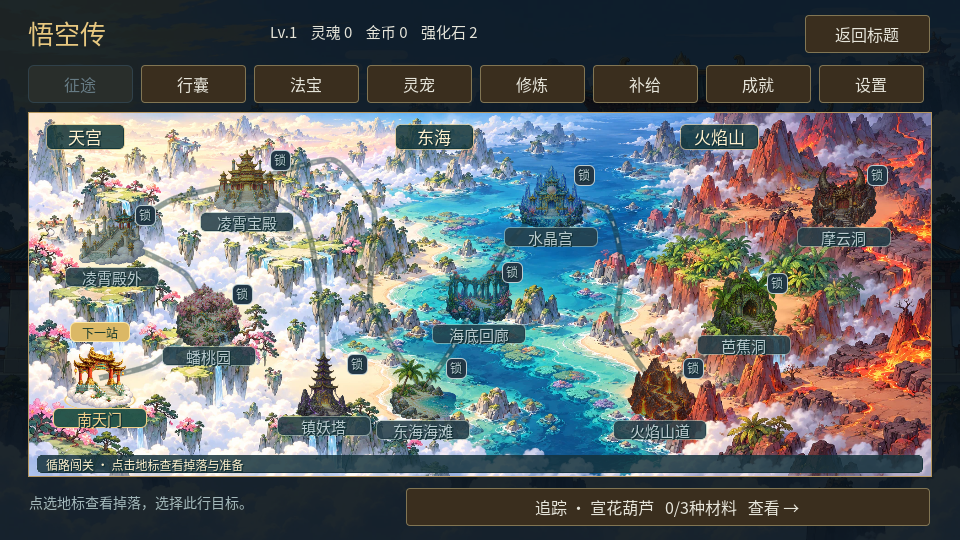
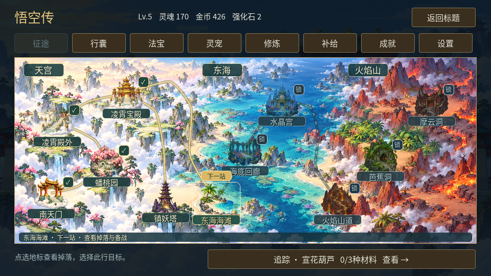
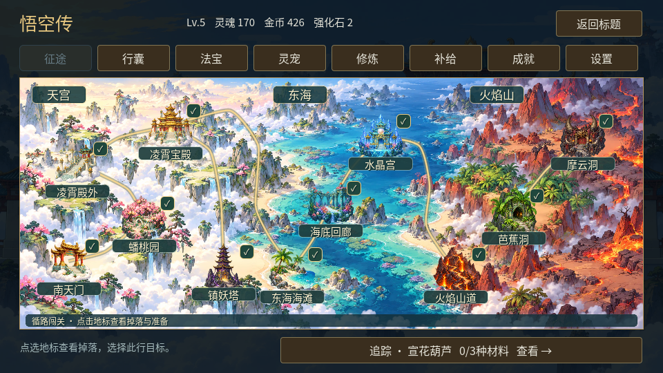
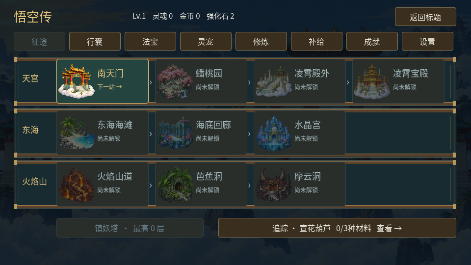

西游山河，一图启程
天宫云路、东海潮岸与火焰山赤岩连成一张全景。直接点选地标查看关卡，沿着路线继续冒险。
电脑浏览器 · 试玩使用内存进度。战斗、养成和关卡解锁沿用原规则；营地没有作为入口。
从南天门出发

金色标记指向下一关；已通关可再访，锁定地标可查看解锁提示。镇妖塔保留支路，快捷整备入口仍在上方。
进度在地图上展开


以上两图使用构造的内存测试进度展示状态；新试玩不会自动解锁关卡。
前后对照

R6 · 章节列表R7 · 山河、路线与关卡地标连续入口演示
15.45秒原生自动界面演示，包含构造的不同进度；不是浏览器或真人通关录像。
原生画面与全部11地标的Viewport输入已检查。Work设置仍关闭浏览器自动操作，本轮浏览器冷/热加载、缓存、刷新与实际键鼠检查尚未完成。